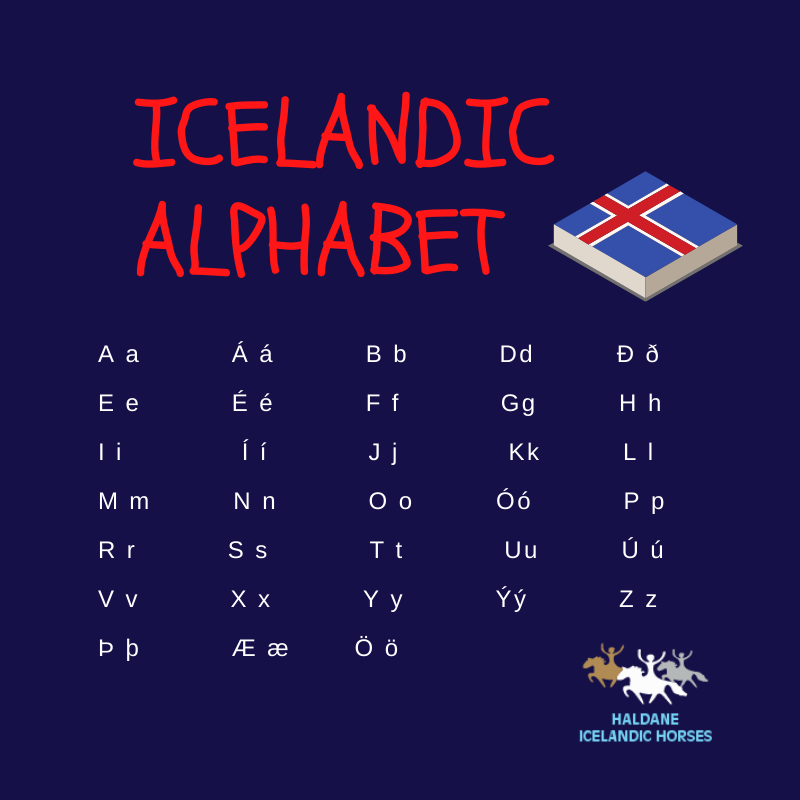
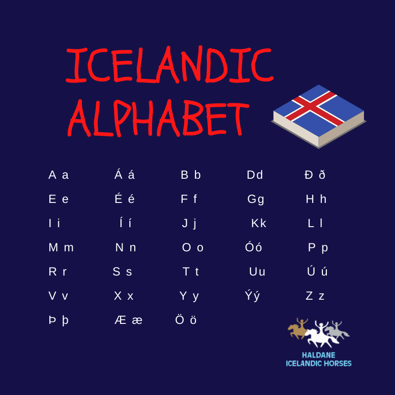

Mi Historia de Aprendizaje
Desde pequeña comencé a aprender inglés en el colegio, pero pronto sentí que no era suficiente para realmente entender y disfrutar el idioma. Así que tomé la iniciativa de ver videos en inglés sin subtítulos en español y ver películas directamente en inglés. Recuerdo que mi primera gran inmersión fue viendo Harry Potter, ¡me encantó el acento británico!

A medida que avanzaba, decidí leer los libros de la escuela en inglés siempre que pudiera y me acostumbré a aprender canciones también en inglés; ¡esto me ayudó muchísimo a mejorar mi vocabulario y pronunciación!
Después de dominar el inglés y ver que me iba muy bien en las clases, comencé a interesarme por otros idiomas. Probé aprender varios, empezando con alemán a través de Duolingo. Pero no paré ahí: buscaba más recursos para explorar cada idioma al máximo. Después decidí aprender islandés.
 

¿Islandés? Bueno, quizá no es el idioma más común, pero simplemente me atraía el desafío de aprenderlo. Comencé a ver videos en estos nuevos idiomas, aunque finalmente lo dejé y me volqué al sueco. En ese momento, mis herramientas principales eran Duolingo y videos de YouTube.
Con el sueco, decidí ir un paso más allá y compré un libro de gramática que venía con audios. Al principio lo usaba de forma tradicional y me fue muy útil, pero luego encontré una técnica que me encantó. Escuchaba los audios una y otra vez hasta que los entendía perfectamente. Cuando lograba entenderlos al 100%, les ponía una etiqueta mental de "dominado". Este proceso no solo mejoraba mi comprensión auditiva, sino que también me ayudaba a visualizar cada palabra en mi mente.
Finalmente, también empecé con japonés. Aunque era un idioma totalmente diferente y requería otra forma de estudio, esta técnica me funcionó de maravilla. Este método de inmersión, repetición y visualización se convirtió en la base de mi aprendizaje.
Hoy en día, me apasiona seguir aprendiendo idiomas y descubrir nuevas formas de sumergirme en ellos. Cada idioma es un viaje único y me encanta el proceso de cada uno.